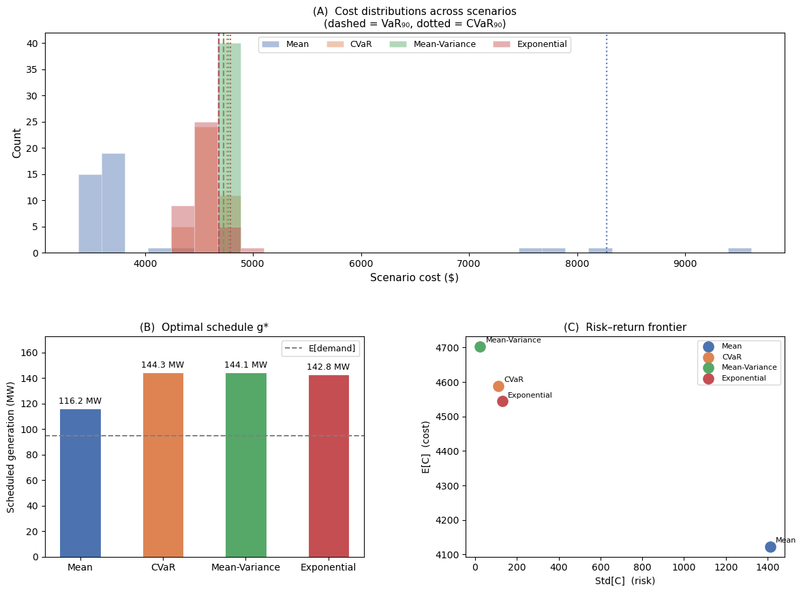

import pyomo.environ as pyo
import numpy as np
import pandas as pd
import matplotlib.pyplot as plt
import matplotlib.gridspec as gridspec
# ─────────────────────────────────────────────────────────────────────────────
# Problem parameters
# ─────────────────────────────────────────────────────────────────────────────
np.random.seed(42)
G_MAX = 150.0 # MW, generator capacity
C_GEN = 30.0 # $/MWh, day-ahead scheduling cost
C_SPILL = 5.0 # $/MWh, over-generation curtailment penalty
C_SHED = 200.0 # $/MWh, load-shedding penalty (VOLL)
ALPHA = 0.90 # confidence level for VaR / CVaR
LAM = 0.05 # mean–variance risk-aversion weight (λ)
THETA = 0.005 # exponential risk-aversion coefficient (θ)
# ─────────────────────────────────────────────────────────────────────────────
# Scenarios: uncertain demand ξ ~ N(100, 25²) clipped to [20, 160] MW
# ─────────────────────────────────────────────────────────────────────────────
N = 40
d = np.clip(np.random.normal(100, 25, N), 20, 160) # demand realisations
p = np.ones(N) / N # equiprobable
S = range(N)
# ─────────────────────────────────────────────────────────────────────────────
# Helper: compute risk statistics from a scenario cost vector
# ─────────────────────────────────────────────────────────────────────────────
def risk_stats(costs):
mean = float(np.dot(p, costs))
var = float(np.dot(p, (costs - mean) ** 2))
VaR = float(np.quantile(costs, ALPHA))
CVaR = float(np.mean(costs[costs >= VaR]))
entro = float((1/THETA) * np.log(np.dot(p, np.exp(THETA * costs))))
return dict(mean=mean, variance=var, std=np.sqrt(var), VaR=VaR,
CVaR=CVaR, entropic=entro)
# ─────────────────────────────────────────────────────────────────────────────
# Model builder
#
# Two-stage structure
# ─────────────────
# Stage 1 (day-ahead): schedule generation g [MW]
# Stage 2 (real-time): observe demand d_s; settle imbalance
# spill_s = excess generation curtailed [MW]
# shed_s = unmet demand (load shed) [MW]
#
# Energy balance: g - spill_s + shed_s = d_s ∀s
#
# Scenario cost: C_s = c_g · g + c_spill · spill_s + c_shed · shed_s
# ─────────────────────────────────────────────────────────────────────────────
def build_and_solve(risk_measure: str):
m = pyo.ConcreteModel(name=risk_measure)
# ── Decision variables ────────────────────────────────────────────────────
m.g = pyo.Var(domain=pyo.NonNegativeReals, bounds=(0, G_MAX))
m.spill = pyo.Var(S, domain=pyo.NonNegativeReals)
m.shed = pyo.Var(S, domain=pyo.NonNegativeReals)
# ── Scenario cost expression ──────────────────────────────────────────────
@m.Expression(S)
def C(m, s):
return C_GEN * m.g + C_SPILL * m.spill[s] + C_SHED * m.shed[s]
# ── Energy balance (per scenario) ─────────────────────────────────────────
@m.Constraint(S)
def balance(m, s):
return m.g - m.spill[s] + m.shed[s] == d[s]
# ── Risk-measure objective ────────────────────────────────────────────────
if risk_measure == 'Mean':
# ── E[C] ──────────────────────────────────────────────────────────────
m.obj = pyo.Objective(
expr=sum(p[s] * m.C[s] for s in S),
sense=pyo.minimize)
slvr = pyo.SolverFactory('glpk')
elif risk_measure == 'CVaR':
# ── CVaR_α (Rockafellar–Uryasev, 2000) ──────────────────────────────
# CVaR = η + 1/(1−α) · Σ_s p_s · [C_s − η]₊
m.eta = pyo.Var() # α-VaR threshold
m.u = pyo.Var(S, domain=pyo.NonNegativeReals) # excess above η
@m.Constraint(S)
def cvar_cut(m, s):
return m.u[s] >= m.C[s] - m.eta
m.obj = pyo.Objective(
expr=m.eta + (1/(1-ALPHA)) * sum(p[s] * m.u[s] for s in S),
sense=pyo.minimize)
slvr = pyo.SolverFactory('glpk')
elif risk_measure == 'Mean-Variance':
# ── E[C] + λ · Var[C] ────────────────────────────────────────────────
# Var[C] = E[C²] − (E[C])² (nonlinear → ipopt)
m.mu = pyo.Expression(expr=sum(p[s] * m.C[s] for s in S))
m.obj = pyo.Objective(
expr=m.mu + LAM * (sum(p[s] * m.C[s]**2 for s in S) - m.mu**2),
sense=pyo.minimize)
slvr = pyo.SolverFactory('ipopt')
elif risk_measure == 'Exponential':
# ── Entropic risk measure: (1/θ) · log E[exp(θ C)] ───────────────────
# = certainty equivalent under exponential utility U(c) = −exp(−θ c)
m.obj = pyo.Objective(
expr=(1/THETA) * pyo.log(
sum(p[s] * pyo.exp(THETA * m.C[s]) for s in S)),
sense=pyo.minimize)
slvr = pyo.SolverFactory('ipopt')
else:
raise ValueError(f"Unknown risk measure: {risk_measure}")
# ── Solve ─────────────────────────────────────────────────────────────────
res = slvr.solve(m, tee=False)
g_opt = float(pyo.value(m.g))
costs = np.array([float(pyo.value(m.C[s])) for s in S])
tc = res.solver.termination_condition
return g_opt, costs, tc
# ─────────────────────────────────────────────────────────────────────────────
# Solve all four formulations
# ─────────────────────────────────────────────────────────────────────────────
risk_measures = ['Mean', 'CVaR', 'Mean-Variance', 'Exponential']
results = {}
print(f"\n{'─'*90}")
print(f" {'Risk Measure':15s} {'g* (MW)':>8} {'E[C]':>8} "
f"{'Std':>7} {'VaR₉₀':>8} {'CVaR₉₀':>8} {'Entropic':>9} Status")
print(f"{'─'*90}")
for rm in risk_measures:
g_opt, costs, status = build_and_solve(rm)
stats = risk_stats(costs)
results[rm] = dict(g_opt=g_opt, costs=costs, **stats)
print(f" {rm:15s} {g_opt:8.2f} {stats['mean']:8.1f} "
f"{stats['std']:7.1f} {stats['VaR']:8.1f} {stats['CVaR']:8.1f} "
f"{stats['entropic']:9.1f} {status}")
print(f"{'─'*90}\n")
# ─────────────────────────────────────────────────────────────────────────────
# Summary table
# ─────────────────────────────────────────────────────────────────────────────
df = pd.DataFrame({
rm: {
'Schedule g* (MW)' : results[rm]['g_opt'],
'E[C] ($)' : results[rm]['mean'],
'Std[C] ($)' : results[rm]['std'],
f'VaR_{ALPHA} ($)' : results[rm]['VaR'],
f'CVaR_{ALPHA} ($)': results[rm]['CVaR'],
'Entropic ($)' : results[rm]['entropic'],
}
for rm in risk_measures
}).T.round(1)
#print("Summary table")
#print(df.to_string())
#print(f"\n{'═'*90}\n\n")
# ─────────────────────────────────────────────────────────────────────────────
# Plots
# ─────────────────────────────────────────────────────────────────────────────
colours = {'Mean': '#4C72B0', 'CVaR': '#DD8452',
'Mean-Variance': '#55A868', 'Exponential': '#C44E52'}
fig = plt.figure(figsize=(14, 10))
#fig.suptitle('Stochastic Economic Dispatch — Risk Measure Comparison',
# fontsize=14, fontweight='bold', y=0.98)
gs = gridspec.GridSpec(2, 2, figure=fig, hspace=0.38, wspace=0.32)
# ── (A) Cost distributions ────────────────────────────────────────────────────
ax0 = fig.add_subplot(gs[0, :])
bins = np.linspace(
min(r['costs'].min() for r in results.values()) - 100,
max(r['costs'].max() for r in results.values()) + 100, 30)
for rm in risk_measures:
ax0.hist(results[rm]['costs'], bins=bins, alpha=0.45,
color=colours[rm], label=rm, edgecolor='white', linewidth=0.4)
ax0.axvline(results[rm]['VaR'], color=colours[rm], lw=1.6,
linestyle='--', alpha=0.9)
ax0.axvline(results[rm]['CVaR'], color=colours[rm], lw=1.6,
linestyle=':', alpha=0.9)
ax0.set_xlabel('Scenario cost ($)', fontsize=11)
ax0.set_ylabel('Count', fontsize=11)
ax0.set_title('(A) Cost distributions across scenarios\n'
'(dashed = VaR₉₀, dotted = CVaR₉₀)', fontsize=11)
ax0.legend(fontsize=9, ncol=4)
# ── (B) Scheduled output g* ───────────────────────────────────────────────────
ax1 = fig.add_subplot(gs[1, 0])
bars = ax1.bar(risk_measures,
[results[rm]['g_opt'] for rm in risk_measures],
color=[colours[rm] for rm in risk_measures],
edgecolor='white', linewidth=0.8, width=0.5)
ax1.axhline(d.mean(), color='grey', lw=1.4, linestyle='--', label='E[demand]')
ax1.bar_label(bars, fmt='%.1f MW', padding=3, fontsize=9)
ax1.set_ylabel('Scheduled generation (MW)', fontsize=10)
ax1.set_title('(B) Optimal schedule g*', fontsize=11)
ax1.set_ylim(0, G_MAX * 1.15)
ax1.legend(fontsize=9)
# ── (C) Risk–return trade-off ─────────────────────────────────────────────────
ax2 = fig.add_subplot(gs[1, 1])
for rm in risk_measures:
ax2.scatter(results[rm]['std'], results[rm]['mean'],
s=120, color=colours[rm], zorder=5, label=rm)
ax2.annotate(rm, (results[rm]['std'], results[rm]['mean']),
textcoords='offset points', xytext=(6, 4), fontsize=8)
ax2.set_xlabel('Std[C] (risk)', fontsize=10)
ax2.set_ylabel('E[C] (cost)', fontsize=10)
ax2.set_title('(C) Risk–return frontier', fontsize=11)
ax2.legend(fontsize=8)
plt.savefig('stochastic_dispatch.png', dpi=150, bbox_inches='tight')
plt.show()
print("\nFigure saved to stochastic_dispatch.png")
──────────────────────────────────────────────────────────────────────────────────────────
Risk Measure g* (MW) E[C] Std VaR₉₀ CVaR₉₀ Entropic Status
──────────────────────────────────────────────────────────────────────────────────────────
Mean 116.19 4122.4 1411.8 4681.6 8272.5 8771.2 optimal
CVaR 144.31 4588.4 112.3 4728.9 4762.0 4618.6 optimal
Mean-Variance 144.12 4702.9 24.8 4726.0 4773.4 4704.6 optimal
Exponential 142.83 4544.3 130.3 4681.0 4794.2 4595.5 optimal
──────────────────────────────────────────────────────────────────────────────────────────

Figure saved to stochastic_dispatch.png